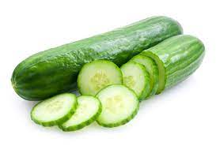

Home
About
It is a long, thin vegetable with a dark green skin that does not need to be cooked
Cucumber Photo

It is a water rich vegetable
Cucumber Photo
It is of Two Types:- Seedless and With Seed
cucumber Photo
The most common type of slicing cucumber found in a grocery store is the garden cucumber